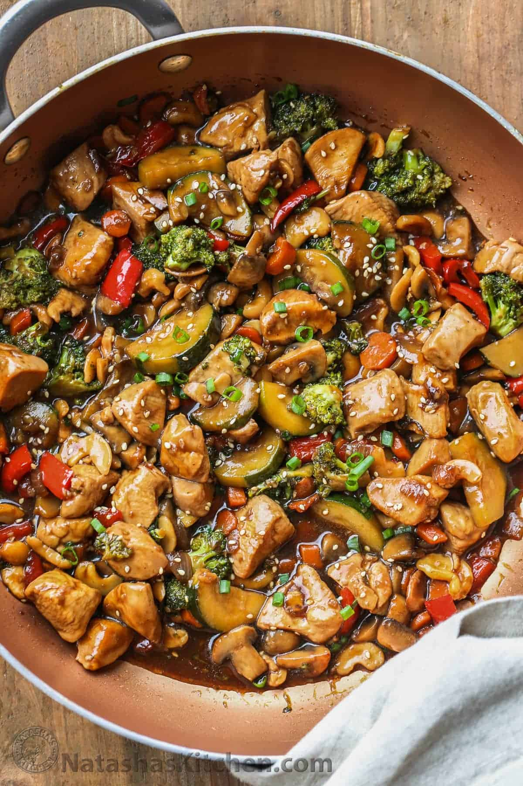

Chicken Stir Fry

Description
Simple and Basic Stir Fry Recipe to start from
Ingredients
Stir Fry Ingredients
- 1 lb chicken thighs, cut into bite sized pieces
- 1/2 zucchini, sliced or cubed
- 2 tbsp oil
- 1 tbsp butter
- 1 cup broccoli florets
- 1 small carrot, cubed
- 8 oz mushrooms, sliced
- 1/2 red pepper, sliced
- 4 garlic cloves, minced
- 1 tsp fresh ginger
- 1/2 onion, sliced
- 1/2 cup cashews
Stir Fry Sauce Ingredients
- 1/2 cup chicken brother
- 1/4 cup water
- 1/4 cup soy sauce
- 2 tbsp honey
- 1 tbsp cornstarch
Steps
- Trim chicken thighs of excess fat and then cut into pieces
- Combine all ingredients for the sauce into a bowl and mix well
- In large pan or wok, on medium high heat, add 1 tbsp oil then add chicken once oil is heated
- Once chicken is cooked through, set aside. Add remaining oil and butter to pan and then add broccoli, zucchini, mushrooms, pepper, onion, and carrot. Cook until vegetables and crisp tender
- Add chicken back to pan, add garlic and ginger, cook until fragrant
- Add cashews then pour sauce over and bring to a boil. Turn heat down and let simmer until sauce is thickened